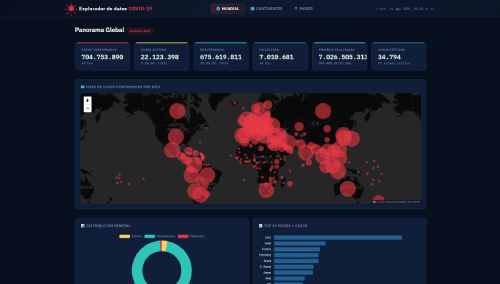
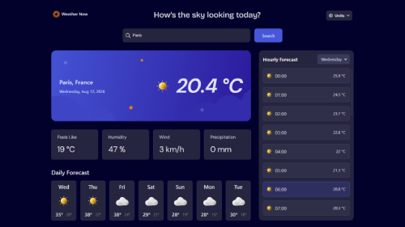
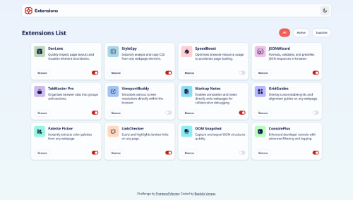

Portafolio
Una selección de mis proyectos más recientes, destacando soluciones frontend y backend.

Explorador de datos
Página web para consultar datos actualizados de COVID-19 a nivel mundial, continental y por país, mediante cifras, comparaciones y gráficos interactivos.
HTML/CSS
JavaScript
Tailwind
Ver proyecto arrow_outward

App de clima
Aplicación web de clima que permite buscar cualquier lugar del mundo y visualizar su clima actual, pronóstico por hora y pronóstico diario, con soporte para unidades métricas e imperiales.
HTML/CSS
JavaScript
React
Ver proyecto arrow_outward

Lista de extensiones
Página web para gestionar extensiones, permitiendo activarlas, desactivarlas, filtrarlas y eliminarlas de forma sencilla.
HTML/CSS
JavaScript
Ver proyecto arrow_outward